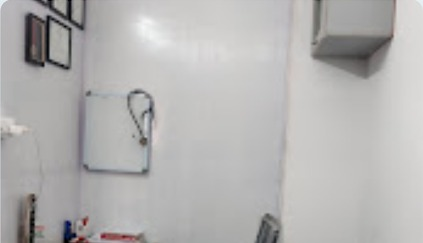
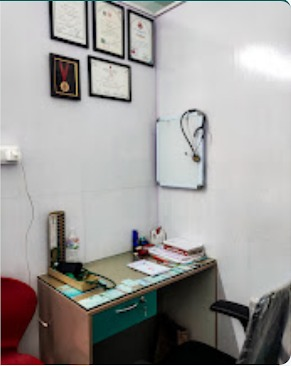

Clinic Hours
9:00 AM - 9:00 PMServing Bhattarahalli & T.C. Palya
A New Standard of Hybrid Care in Your Community.
At Medicure, clear doctor-patient dialogue meets practical everyday healthcare. Visit for family consultations, diagnostics, medicine support, and follow-up care in a calm clinical setting.
Status
Open daily
Pristine Environments
Designed for clear consultations and comfortable care.
Care Services
Common health needs, handled in one place.
Medicure combines everyday outpatient care with in-house support services so patients can move from consultation to diagnostics and medicine pickup with less friction.
General Physician
Family-focused consultations for fever, infections, pain, routine checkups, and follow-up care.
Pediatrics
Child health consultations with patient explanations for parents and practical care plans.
Diabetology
Support for sugar control, medication reviews, monitoring routines, and lifestyle guidance.
Gynaecology
Women's health consultations delivered with privacy, clarity, and respectful clinical attention.
Physiotherapy
Recovery support for mobility, posture, pain management, and guided rehabilitation needs.
Laboratory
Pathology and diagnostic testing support for faster decisions after your consultation.
Our Philosophy
Modern reliability meets professional excellence.
The clinic is built around direct communication, clean environments, and practical continuity of care for patients in Bhattarahalli and T.C. Palya.
Doctor-Patient Dialogue
Medical decisions are easier when they are explained clearly. The care model emphasizes transparent diagnosis, treatment options, and patient questions.

Professional Staff
Clinical and support staff focused on timely service and attentive patient handling.
Clinical Hygiene
Clean consultation areas and organized workflows help create a safer, calmer visit.
The Hybrid Care Model
In-person consultations are supported by clear records, follow-up planning, and practical coordination across pharmacy and laboratory needs.
- Clear visit summaries and next steps
- Easy follow-up scheduling
- Integrated pharmacy and diagnostic support
Doctors
Consultations for families, children, and chronic care.
The appointment flow is designed for quick triage and clear care routing. Patients can request the right consultation type and the clinic can confirm the available slot.
Pharmacy
Medicine support after your consultation.
Patients can complete their visit with medicine guidance and prescription support at the clinic, reducing the need for extra stops after consultation.
- Prescription coordination
- Patient-friendly dosage reminders
- Support for routine medicine needs
Contact
Visit Medicure Clinic & Medical in Bhattarahalli.
Address
A Block Avenue, No. 15/16, Lakshmi Mansion, near Garden City University, Bhattarahalli, Bengaluru, Karnataka 560049
Hours
Open daily, 9:00 AM - 9:00 PM
Emergency Care
For urgent symptoms, visit the clinic directly or contact local emergency services.